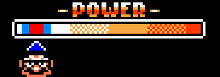

Throughout the game you will find doors that lead to an annoyingly repetitive minigolf game.
Beating said game will raise the minigolf block in that level for that playthrough (reverts back to normal after returning to the map).
Playing costs a certain # o’ coins, depending on how far in the game you are. @ the beginning o’ the game they cost 10 coins; by the end, they cost 50.
Wario needs to charge attack a Para-Goom with his elbow & make it land in the hole @ the far right o’ the field within a certain # o’ turns.
If you don’t get the Para-Goom in the hole by the time the # o’ turns is reached, you lose & have to pay ’gain to retry.
Each turn is started by pressing A. Then you need to time A somewhere ’long the white-to-orange gradient. The farther right the arrow is when you hit A, the farther the Para-Goom is knocked.
Be careful: if you don’t hit the A button before the arrow reaches the end o’ the bar, Wario will just collapse & you’ll waste a turn.
If you hit the arrow within the gradient, then the arrow will slide back leftward & you’ll need to press A when its in the red or blue rectangles on the left side o’ the bar.
If it’s in the red, the Para-Goom will bounce a li’l forward. If it’s in the right blue spot, it’ll bounce farther ’head. If it’s on the left spot, it’ll bounce backward.
‘Gain, not pressing A before the arrow slides past these spots will cause Wario to collapse & make you lose a turn.
In the pauses ’tween turns, one can move the camera leftward & rightward to see the rest o’ the field. Releasing the arrow buttons will cause the camera to slide back to where Wario is, & pressing A or B will cause the camera to rush back to Wario.
If one looks @ the field, one will see a pink outline o’ the Para-Goom. This shows where the Para-Goom will land with a full hit. This doesn’t include the effects o’ its after-bounce, but does automatically adjust to terrain differences (see below).
Throughout the field are various terrain that affect one’s gameplay.
Most o’ the field is covered with generic turf on which the Para-Goom acts normally. You’ll want to have the Para-Goom land on it as much as possible.
Rough grass & sand reduces the distance in which Wario can hit the Para-Goom, making one waste mo’ turns getting it o’er to the end.
Water & lava are e’en worse. No matter where the Para-Goom lands in it, the Para-Goom is sent back to the leftmost end o’ the pit & the player loses an extra turn (in addition to the 1 they lost hitting the Para-Goom).
If you haven’t gotten ’nough minigolf throughout the main game, once you collect all 8 crayon treasures & fully colored in the hill ’tween the North & West, when passing ’tween North & West on the map Wario will stop in front o’ a door in the hill, allowing the player to press Up to enter.
In there you will find a longer form o’ the minigolf game, where one has to play through multiple fields per course & the fields are longer. Here pars don’t cause one to get game o’er if one takes too many turns, but simply affects one’s score ala real golf.
You start out with 3 courses representing morn, afternoon, & evening. The 4th course, which is simply a redder afternoon, is unlocked by getting all 8 music coins within a single playthrough o’ every level to fill in the picture that appears after beating a level.
Though you can’t unlock anything with this game @ all, it still costs 50 coins to play a course.